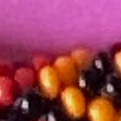
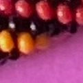
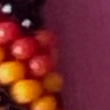
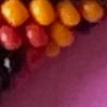
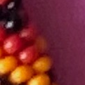

199 supported / 2 conflicting / 7 insufficient. Two explicit maker-yellow corrections resolve positions 29 and 127. Geometry and bead identities are unchanged. A=7a+6b, N=2704 and 13 repeats are conditional. The displayed cyclic origin and forward direction are conventions.
Report and recommendation · Reproduce · Strict CSV · Provisional CSV · Every position’s evidence/confidence · Original photograph
Basic rows contain alternately 6 and 7 identical ellipses; seven extra beads on BOTH sides of EVERY row make the full rows 20 or 21 symbols. Dotted vertical seams separate these extensions from the basic strip. Right is string +1, up-left +6, up-right +7. The thin teal START and purple END lines mark one block, positions0–207 exactly once in each central strip. Eight continuation rows appear before and after it; all copies retain their original pattern-position color and identity. Reading proceeds upward. White is the chosen interval; gray background is continuation. Strict unknowns stay gray ?. Provisional inferred colors have dashed blue outlines.
Drag to pan; use the wheel or buttons to zoom. Click an ellipse or a string-order bead below: every display of that position is highlighted, and its photographed sources appear below. Every row has seven horizontal extensions on each side by default. These keep the same k as their canonical aliases, lie outside the selected central interval and add no observations. On seven-bead rows the farthest extension crosses two seam identifications, not just one.
Print two-page A4 PDF · High-resolution PNG · Vector SVG · Print with indices · General 6.5-bead presentation method · Algebra, seam and general-boundary verification
Read left to right, then down. Each circle is one string position, not a physical crochet row. Red, yellow and black denote pigment. Gray ? means unresolved under the unchanged strict rule. Blue dashed circles in the provisional block are predictions, never new photographic colors. Click any position.
Export graphic · Vector graphic
Rows are proposed occurrences 0–12; columns are positions 0–207. Solid circles are recorded photographic colors. Faint circles are predictions at addresses without indexed photographic observations. Blue dashed borders denote tentative motif entries. Magenta borders identify the three recorded mismatches. Gray ? is a strict unknown. Scroll horizontally; click a circle to open its original photographed occurrence if one exists. Only 1,041 of the 2,704 conditional addresses are indexed photographically. Cyclic closure returns address 2703 (q12, position207) to address0 (q0, position0).
Target is feature 1. Numbers belong only to this photograph and its matching current adjacency diagram. Native support locations are not asserted bead centers.
The provisional completion matches 1,038/1,041 recorded colors. The strict pattern matches 1,011/1,011 evaluable observations and abstains on 30. These are fitted-label comparisons. Guarded geographic held-out A208 predicts 1,024/1,041; whole-occurrence held-out predicts 1,038/1,041. They reuse one photograph and a previously selected hypothesis, so they are not independent physical validation.
Native photograph showing the twelve frozen geographic blocks
Seven are unanimously recorded black but lack three geographic blocks/observations. Positions 83 and 189 tentatively use yellow plurality while contrary red records remain. Prediction scores are fixed-shrinkage descriptive quantities, not calibrated confidence in physical truth. Every source can be inspected above.
These edge/thin-body sources have no safely delimited material core in R343. No new pigment judgment is invented here. Click an ID to examine its native body, stable key and existing links. The report recommends targeted independent reobservation of these three bodies, rather than another classifier campaign.





All proper divisors of 208 are contradicted by pairs of strict colors. Therefore every completion of this strict 208-block has minimal cyclic period 208 under this indexing and closure. This does not establish that the photographic indexing or physical total is correct. B207/B299/A338 fit the same recorded cohort poorly. No broad winding search ran.